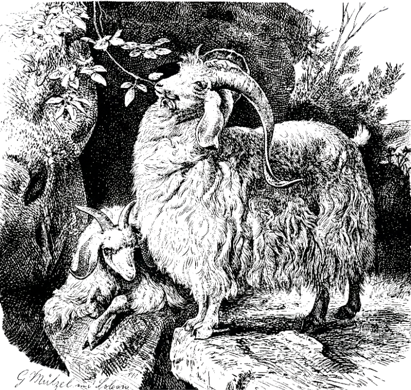
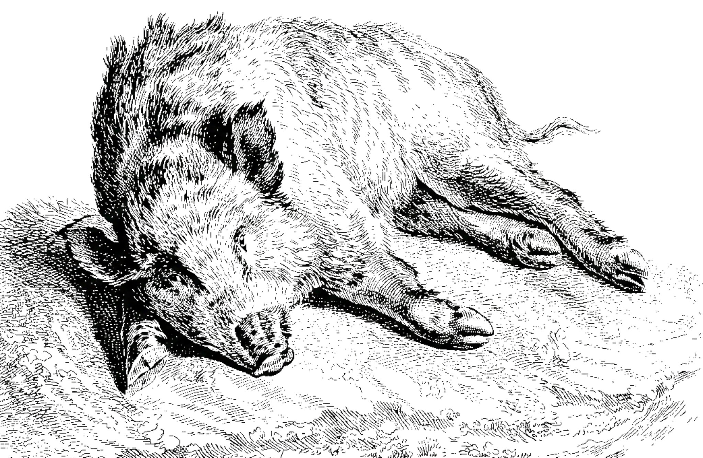
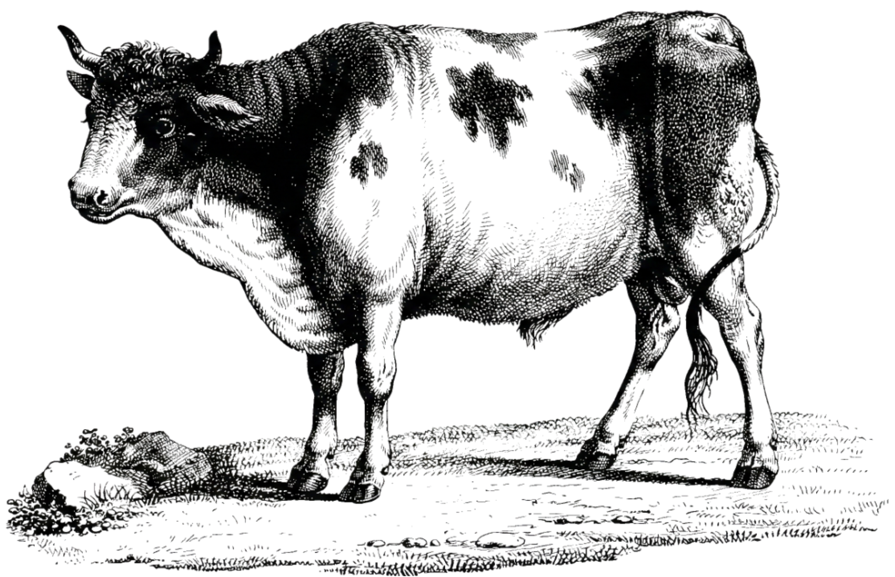
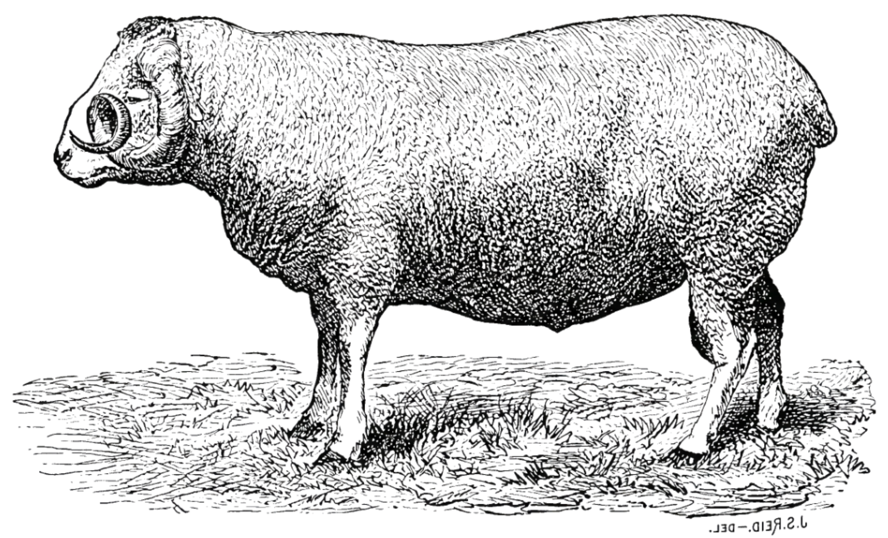
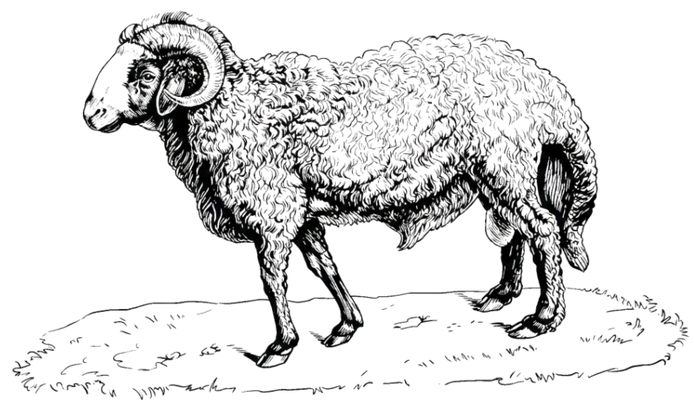
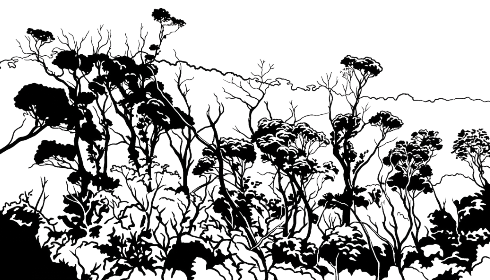
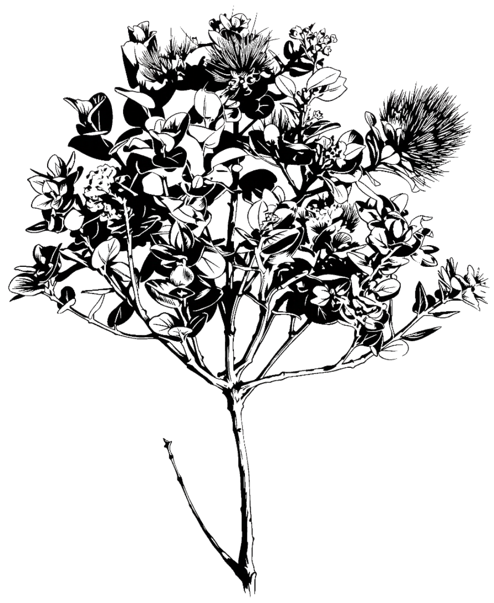

<!DOCTYPE html>
<html lang="en">
<head>
    <meta charset="UTF-8">
    <meta name="viewport" content="width=device-width, initial-scale=1.0">
    <title>Tracking Rapid 'Ōhi'a Death</title>
    
    <style>
    * {
        box-sizing: border-box; 
    }

    body, html {
        margin: 0;
        padding: 0;
        height: 100vh; 
        background-color: #DEC79F; 
        font-family: 'EB Garamond', serif;
        color: #2c2c2c;
        
    }

    .dashboard {
        display: grid;
        width: 100vw;  
        height: 100vh; 
        column-gap: clamp(1rem, 2vw, 3rem); 
        grid-template-columns: 1fr 2.37fr;
        grid-template-rows: 5.1fr 1fr;
        
        grid-template-areas: 
            "sidebar map"
            "sidebar footer";
    }

    .sidebar {
        grid-area: sidebar;
        display: flex;
        flex-direction: column;
        justify-content: center;
        align-items: stretch;
        padding: 0; 
        overflow: hidden;
        min-height: 0;
    }

    .beetle-section {
        flex: 35;
        display: flex;
        flex-direction: row; 
        justify-content: center;
        align-items: stretch;
        padding: clamp(1rem, 2vw, 2rem); 
        min-height: 0; 
    }

    .beetle-image {
        display: flex;
        align-items: center;
        justify-content: center;
        height: 90%;
        width: 100%; 
        align-self: center;
    }

    .beetle-image img {
        max-width: 100%; 
        max-height: 100%; 
        object-fit: contain;  
    } 

    .beetle-text {
        display: flex;
        flex-direction: column;
        justify-content: center; 
        text-align: center;      
    }

    .beetle-text p {
        font-size: 1.05vw; 
        line-height: 1.4;  
    }

    .ungulate-section {
        flex: 59; 
        display: flex;
        flex-direction: column; 
        padding: clamp(1rem, 2vw, 2rem); 
        min-height: 0; 
    }

    .ungulate-header-text {
        flex: 20; 
        flex-direction: column;
        justify-content: center; 
        text-align: center;
    }

    .ungulate-header-text p {
        font-size: 1.05vw;   
        line-height: 1.4;   
    }

    .ungulate-graphics-container {
        display: flex;
        flex-direction: row; 
        flex: 80; 
        min-height: 0; 
    }

    .left-grid {
        flex: 1 1 50%; 
        display: flex;                  
        flex-direction: column;         
        justify-content: space-between; 
        padding-right: clamp(5px, 1vw, 15px);            
    }

    .right-grid {
        flex: 1 1 50%; 
        display: flex;
        flex-direction: column;
        justify-content: space-between; 
    }

    .left-grid img {
        width: 100%;       
        height: auto;      
        max-height: 48%;   
        object-fit: contain; 
    }

    .right-grid img {
        width: 100%;       
        height: auto;      
        max-height: 32%;  
        object-fit: contain; 
    }

    .flex-half {
        flex: 1 1 50%; 
        min-width: 0; 
        min-height: 0; 
    }

    .ungulate-grid {
        display: grid;
        grid-template-columns: 1fr 1fr;
        grid-template-rows: 1fr 1fr;
        gap: clamp(5px, 1vw, 15px);
    }

    .map-section {
        grid-area: map;
        position: relative;
        padding: clamp(1.5rem, 3vh, 3rem) clamp(1.5rem, 3vw, 3rem) clamp(0.75rem, 1.5vh, 1.5rem) 0; 
    }

    #map-container {
        width: 100%;
        height: 100%;
        background-color: #5591D7; 
        border: 2px solid #333;
        box-shadow: inset 0 0 10px rgba(0,0,0,0.1);
    }

    .footer {
        grid-area: footer;
        padding: clamp(0.75rem, 1.5vh, 1.5rem) clamp(1.5rem, 3vw, 3rem) clamp(1.5rem, 3vh, 3rem) 0; 
        display: flex;
        flex-direction: row;
        justify-content: space-between; 
        align-items: center; 
        gap: clamp(1rem, 2vw, 3rem); 
    }

    .footer-text {
        flex: 1; 
        text-align: center; 
    }

    .footer-text p {
        font-size: 1.05vw; 
        line-height: 1.4;   
        margin: 0; 
    }

    .footer-img-left {
        height: 8vw; 
        flex-shrink: 0; 
        display: flex;
        justify-content: flex-start; 
        align-items: center;
    }

    .footer-img-left img {
        height: 100%;
        width: auto; 
        object-fit: contain; 
    }

    .footer-img-right {
        height: 7vw; 
        flex-shrink: 0; 
        display: flex;
        justify-content: flex-end; 
        align-items: center;
    }

    .footer-img-right img {
        height: 100%;
        width: auto; 
        object-fit: contain; 
    }

    </style>
</head>
<body>

    <div class="dashboard">
        
    <aside class="sidebar">
        <article class="beetle-section">
            <div class="flex-half beetle-image">
                
            </div>
            <div class="flex-half beetle-text">
                <p>Wood boring ambrosia beetles play a central role in the spread of Ceratocystis wilt of
‘ohi ‘a, a fungal disease caused by Ceratocystis lukuohia that kills the bioculturally important ‘ohi ʻa (Metrosideros polymorpha) tree. Beetles contribute to the spread of the disease by extruding fungus-infected wood particles (frass). [1]</p>
            </div>
        </article>

        <article class="ungulate-section">
            <div class="ungulate-header-text">
                <p>The spatial patterns of ʻōhiʻa mortality observed across all four sites included in the study show significant differences in areas with and without ungulates, suggesting that ungulate exclusion is an effective management tool to lessen the impacts of ROD in forested areas in Hawaiʻi. [2]</p>
            </div>
            <div class="ungulate-graphics-container">
                <div class="left-grid">
                    
                    
                </div>
                <div class="right-grid">
                    
                    
                    
                </div>
            </div>
        </article>
    </aside>

        <main class="map-section">
            <div id="map-container">
            </div>
        </main>

    <footer class="footer">
        <div class="footer-img-left">
            
        </div>

        <div class="footer-text">
            <p>‘Ōhi‘a forests cover 865,000 acres across the State of Hawai‘i, and ‘ōhi‘a trees are responsible for roughly two-thirds of the forest canopy cover on Hawai‘i Island. ‘Ōhi‘a is foundational to the native forests of Hawai‘i, growing from sea level to the high-elevation tree line, on barren lava flows and in dry-desert-like settings, mesic savanna woodlands, wet forests, and dwarf-forest bogs. [3]</p>
        </div>

        <div class="footer-img-right">
            
        </div>
    </footer>

    </div>

</body>
</html>